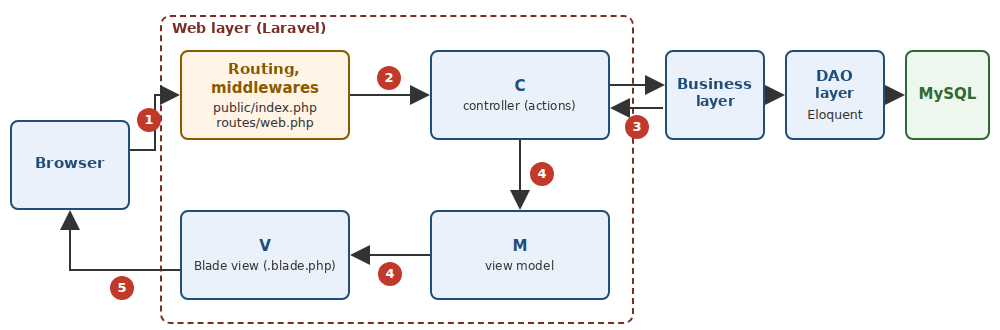
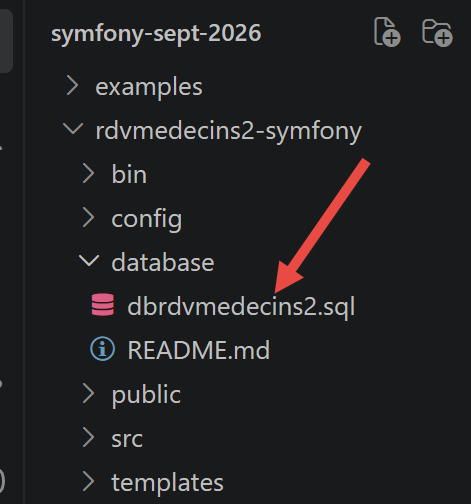

1. Introducción
El PDF del documento está |AQUÍ|.
Los códigos del documento están |AQUÍ|.
Este documento es un producto de Claude, la IA de Anthropic. Sigue al documento “Introducción paso a paso al framework web [Flask]” (2026), que a su vez siguió a los documentos “Introducción paso a paso al framework web [Spring MVC],” "Introducción paso a paso al framework web [ASP.NET Core MVC]," y "Introducción paso a paso al framework web [NestJS]" (2026). Este documento adapta el curso de [Flask] al entorno [PHP]:
- el framework [Flask] y el lenguaje [Python] se reemplazan por el framework [Laravel] 13 y el lenguaje [PHP] (versión 8.4 o posterior);
- las vistas [Jinja2] se reemplazan por vistas [Blade], el motor de vistas de [Laravel];
- la validación mediante [Pydantic] y [WTForms] se reemplaza por la de [Laravel]: reglas de validación y solicitudes de formulario ([FormRequest]);
- las pocas decenas de líneas de código de seguridad escritas a mano para [Flask] se reemplazan por el sistema de autenticación de [Laravel] (guardias, middleware, [Gate], fachada [Hash], limitador de intentos), complementado con la biblioteca [firebase/php-jwt] para los tokens JWT;
- el ORM [SQLAlchemy] se reemplaza por el ORM de [Laravel], [Eloquent], que sigue basándose en [MySQL].
El documento sigue de cerca la estructura del curso de [Flask]: primero, numerosos proyectos pequeños, cada uno centrado en un concepto específico, seguidos de un caso de estudio completo —una aplicación web para agendar citas en un consultorio médico— con todos los archivos comentados en detalle. Los ejemplos tienen los mismos números y tratan los mismos temas que en los cursos de [Flask], [Spring MVC] y [ASP.NET Core MVC]: un lector que conozca cualquiera de estos cursos puede comparar los frameworks ejemplo por ejemplo. Sin embargo, esto no es necesario: este documento se basta a sí mismo y no supone ningún conocimiento previo de esos frameworks. Los únicos requisitos previos son una comprensión básica de la programación web (el protocolo HTTP, el lenguaje HTML) y los fundamentos del lenguaje [PHP] (variables, arreglos, funciones, clases). El curso “Introducción al lenguaje PHP7 mediante ejemplos” (2019) presenta el lenguaje en sí para quienes necesiten aprenderlo primero; las novedades de [PHP] 8 que se usan aquí (propiedades promovidas, clases [readonly], enumeraciones, argumentos con nombre, el operador nullsafe, etc.) se explican cuando aparecen por primera vez.
1.1. El papel de Laravel en una aplicación web
Una aplicación web suele construirse en capas, y cada capa se comunica solo con las capas vecinas:

- la capa web recibe las solicitudes HTTP del navegador y le devuelve páginas HTML. Es la capa que [Laravel] nos ayuda a escribir;
- la capa de negocio contiene las reglas de negocio de la aplicación (por ejemplo, “un paciente solo puede tener una cita próxima”). No sabe nada de la web: podría servir igualmente a una aplicación de línea de comandos;
- la capa de acceso a datos (capa DAO, por *Data Access Object*) lee y escribe en la base de datos. Usaremos [Eloquent], el ORM (*Object Relational Mapper*) de [Laravel], que asigna las filas de las tablas a objetos [PHP].
La propia capa web sigue el patrón MVC (*Model-View-Controller*):
- el controlador (C) es una clase [PHP] cuyos métodos, llamados acciones, atienden cada uno un tipo específico de solicitud (por ejemplo, [GET /schedule]). Una acción lee los parámetros de la solicitud, procesa la solicitud mediante la capa de negocio y luego selecciona la vista que se mostrará;
- el modelo (M) es el conjunto de datos que la acción pasa a la vista;
- la vista (V) es un archivo [Blade] (extensión [.blade.php]): una página HTML que contiene expresiones [{{ ... }}] y directivas [@if], [@foreach]..., que el motor [Blade] reemplaza con los datos del modelo.
Una nota sobre la terminología, para evitar confusiones: en [Laravel], la palabra “modelo” (*model*) suele referirse a un modelo de [Eloquent], una clase que representa una tabla de la base de datos (archivo de [app/Models]). Este documento usa la palabra en ambos sentidos, y precisa cada vez cuál se entiende: el modelo de la vista (los datos pasados a una vista) y el modelo de [Eloquent] (como se verá en el capítulo sobre acceso a datos). La palabra “plantilla” se refiere a la vista común de la que heredan las demás páginas (capítulo sobre vistas).
El procesamiento de una solicitud sigue los pasos numerados del diagrama:
- 1: El navegador envía una solicitud HTTP, por ejemplo, [GET /schedule?doctorId=1&day=2026-09-26];
- 2: El servidor web recibe la solicitud y se la pasa a la aplicación [Laravel] mediante el archivo [public/index.php]. Durante el desarrollo, este servidor es el que incluye [PHP], iniciado con el comando [php artisan serve]; en producción, será un servidor como [nginx] o [Apache], asociado con [PHP-FPM]. La solicitud pasa por componentes de middleware —clases que procesan todas las solicitudes (cookies, sesiones, seguridad, etc.)— y luego [Laravel] compara la ruta solicitada con las rutas de la aplicación y selecciona la acción encargada de atender esa solicitud: esto es el enrutamiento;
- 3: La acción solicita a la capa de negocio los datos que necesita; si es necesario, la capa de negocio recurre a la capa DAO, que consulta la base de datos [MySQL] mediante SQL;
- 4: La acción construye el modelo M de la vista e indica al motor [Blade] que genere la página (función [view]);
- 5: La página HTML generada por la vista es la respuesta de la acción, que [Laravel] devuelve al navegador.
[Laravel] es, con diferencia, el framework web más utilizado del mundo [PHP], por delante de [Symfony] (en cuyos componentes, dicho sea de paso, se basa). Gratuito y de código abierto, creado en 2011 por Taylor Otwell, funciona en cualquier lugar donde funcione [PHP] ([Windows], [Linux], [macOS]), y [PHP] funciona con casi todos los proveedores de alojamiento web. Es un framework integral: enrutamiento, vistas, validación, sesiones, caché, autenticación, traducción, acceso a bases de datos, envío de correos electrónicos, tareas en segundo plano... todo viene incluido y diseñado para funcionar en conjunto. Es lo opuesto al microframework [Flask] de la lección anterior, que dejaba al desarrollador la tarea de ensamblar sus propios componentes: [Laravel] hace mucho por sí solo, con muy poco código, y uno de los objetivos de este documento es revelar lo que ocurre “detrás de escena”. [Laravel] puede crear servidores que devuelven JSON a un cliente ([JavaScript], [Angular], [React], [Vue.js], [Flutter]...) así como aplicaciones web tradicionales, en las que el servidor genera las páginas HTML y el navegador se limita a mostrarlas. Es este segundo caso de uso el que examina este documento.
Una particularidad de [PHP] explica buena parte de [Laravel]: la aplicación se reconstruye con cada solicitud y luego se descarta (Ejemplo 01). Volveremos a este punto con frecuencia.
1.2. Herramientas utilizadas
Los ejemplos se escribieron y probaron con las siguientes herramientas (las instrucciones de instalación se dan en el apéndice):
- [PHP] 8.4 (sirve cualquier versión 8.4 o posterior), con las extensiones [intl], [mbstring], [openssl], y [pdo_mysql];
- [Composer] 2, el administrador de bibliotecas de [PHP];
- el editor [Visual Studio Code], con las extensiones [PHP Intelephense] (análisis de código) y [Laravel] (vistas [Blade]);
- un navegador reciente ([Chrome], [Firefox], [Edge]);
- la herramienta de línea de comandos [curl], que muestra las respuestas HTTP sin procesar (viene incluida con [Windows] 10 y 11);
- el SGBD [MySQL] (o [MariaDB]), por ejemplo, el de [Laragon] en [Windows], a partir del capítulo sobre acceso a datos y para el caso de estudio. En [Windows], [Laragon] instala [PHP], [Composer], y [MySQL] todo a la vez.
[Laravel] y las demás bibliotecas no forman parte de [PHP]: [Composer] las descarga del repositorio [Packagist] durante la instalación (por lo que ese día debe haber conexión a Internet) y las coloca en una carpeta [vendor]. Cada proyecto describe sus bibliotecas en un archivo [composer.json]. La siguiente tabla enumera las principales, junto con las versiones utilizadas:
[laravel/framework] | el framework: enrutamiento, middleware, controladores, vistas ([Blade]), validación, sesión, caché, autenticación, traducción, [Eloquent]... | 13.33.0 |
[symfony/*] | los componentes de [Symfony] sobre los que está construido [Laravel] (solicitudes y respuestas HTTP, enrutamiento, consola), que se instalan junto con él | 8.1 |
[nesbot/carbon] | fechas (p. ej., 12), se instala con [Laravel] | 3.14.0 |
[brick/math] | números decimales exactos (ejemplo 06), se instala con [Laravel] | 1.0.0 |
[firebase/php-jwt] | tokens JWT (sección sobre autenticación) | 7.2.0 |
[Laravel] se instala normalmente creando un proyecto completo con el comando:
[Composer] descarga entonces el esqueleto de una aplicación [Laravel] (unos cincuenta archivos y carpetas: configuración, proveedores de servicios, migraciones, pruebas, herramientas de compilación de [JavaScript]...), luego sus bibliotecas, y crea una clave de cifrado. Así se inicia un proyecto real. Con fines de aprendizaje, este esqueleto tiene un inconveniente: contiene muchos archivos cuyo propósito aún no se comprende. Por eso los ejemplos de este documento parten del otro extremo: el Ejemplo 01 es la aplicación [Laravel] más pequeña posible, y cada ejemplo agrega solo los archivos que necesita. El caso de estudio final tiene la estructura de una aplicación [Laravel] estándar.
1.3. Ejecutar el caso de estudio
1.3.1. Instalación de Laragon
El caso de estudio requiere un SGBD, MySQL, un intérprete de PHP, y el instalador de paquetes de PHP [composer]. Laragon puede proporcionar todo esto y más. En septiembre de 2026, Laragon está disponible en la URL [Download Laragon – Fast & Modern Dev Environment ]. Laragon incluye herramientas que permiten instalar un servidor PHP y el SGBD [MySQL]:

- en [1], un servidor web Apache;
- en [2], el SGBD [MySQL];
- en [3], una herramienta de mensajería que no utilizaremos;
- [4] inicia todos los servicios (Apache, [MySQL], MailPit);
- [5] muestra la página web de la URL [http://localhost]. De forma predeterminada, esta URL hace referencia a la carpeta <laragon-install>\www, donde <laragon-install> es la carpeta de instalación de Laragon;
- en [6], inicia la herramienta HeidiSQL, que permite administrar bases de datos MySQL. Usaremos esta herramienta para crear la base de datos que utiliza la aplicación RdvMedecins;
- en [7], abre un terminal; todos los binarios necesarios de Laragon están en el PATH;
- en [8], abre una ventana del Explorador de Windows en la carpeta asociada con la URL [http://localhost];
La carpeta de instalación de Laragon contiene los siguientes elementos:
 |
- En [1], la carpeta [bin] contiene numerosas aplicaciones:
 |
- en [1], el servidor web Apache;
- en [2], un terminal de línea de comandos;
- en [3], un cliente [git] que permite administrar las diferentes versiones de un proyecto;
- en [4], un administrador de bases de datos;
- en [5], un administrador de correo;
- en [6], el SGBD [MySQL];
- [7], otro servidor web;
- en [8], [node.js] para ejecutar scripts de JavaScript;
- [9], un editor de texto;
- [10], el intérprete de PHP;
- [11], el intérprete de [Python];
- [12], un servidor de caché;
Laragon incluye un entorno de desarrollo integral. En este curso, usaremos:
- el SGBD [MySQL], [6], y la herramienta [heidisql] para la administración gráfica;
- el intérprete de PHP 8.5;
- el instalador de paquetes [composer];
El README del caso de estudio indica que debe ingresar los siguientes comandos en un terminal:
para instalar los paquetes de PHP necesarios para los ejemplos y el caso de estudio.
para ejecutar uno de los ejemplos o el caso de estudio. Si usa un terminal [PowerShell] dentro de VSCode, se encontrará con el siguiente problema: ni [composer] ni [php] están presentes en el directorio PATH de la máquina Windows después de instalar Laragon. Por lo tanto, estos comandos no serán reconocidos en un terminal de VSCode.
Para incluir [composer] y [php] en el PATH de la máquina Windows, abra un terminal de PowerShell en modo [administrator] y luego escriba los siguientes comandos:
[Environment]::SetEnvironmentVariable("Path",[Environment]::GetEnvironmentVariable("Path", "Machine") + ";C:\laragon\bin\composer","Machine")
[Environment]::SetEnvironmentVariable("Path",[Environment]::GetEnvironmentVariable("Path", "Machine") + ";C:\laragon\bin\php\php-8.5.11-nts-Win32-vs17-x64","Machine")
Ajuste las dos rutas resaltadas según su entorno.
Deberá reiniciar VSCode para que estos cambios surtan efecto.
Para crear la base de datos [MySQL] necesaria para el caso de estudio, proceda de la siguiente manera:
 |
- En [1], todos los servicios deben estar iniciados;
- en [2], la opción [Database] permite administrar la base de datos;
La opción [Database] inicia una utilidad llamada HeidiSQL:
 |
- En [1], puede seleccionar diversas opciones de SGBD. El valor predeterminado es el SGBD MySQL. Es aceptable;
- en [2], inicia sesión en HeidiSQL;
 |  |
- En [1-2], ejecute el archivo SQL y luego seleccione el archivo [dbrdvmedecins2.sql], que encontrará en la carpeta [laravel-sept-2026/rdvmedecins2-laravel/database]:

La ejecución del archivo [3] creará la base de datos [dbrdvmedecins2] que utiliza el caso de estudio. Para verla, ejecute F5 dentro de HeidiSQL para actualizar la pantalla:
Nota del editor: Las siguientes capturas de pantalla muestran una base de datos llamada [dbrdvmedecins], mientras que la base de datos del caso de estudio se llama [dbrdvmedecins2]. Las dos bases de datos son prácticamente idénticas, por lo que consideramos innecesario tomar nuevas capturas.
Fin de la nota

Se ha creado la base de datos [dbrdvmedecins] . Este es su contenido:

- en [1-3], la tabla [clients];
- [id] es la clave primaria de la tabla;
- [version] es el número de versión de la fila. Este número se incrementa cada vez que se modifica la fila;
- [titre, nom, prenom] identifica a la persona;

- en [1-3], la tabla [medecins];
- [id] es la clave primaria de la tabla;
- [version] es el número de versión de la fila;
- [titre, nom, prenom] identifica a la persona;

- En [1-3], la tabla de los intervalos horarios de citas de los médicos:
- [id]: clave primaria;
- [version]: número de versión de la fila;
- [id-medecin]: clave externa que hace referencia a la clave primaria del médico;
- [hdebut, mdebut]: hora y minutos del inicio de la cita. Así, [8,20] significa 8:20 a. m.
- [hfin, mfin]: hora y minutos del final de la consulta.

- En [1-3], la tabla [rv] de citas agendadas;
- [id]: clave primaria;
- [version]: número de versión;
- [jour]: fecha de la cita;
- [id_creneau]: clave externa que hace referencia a la clave primaria del intervalo horario de la cita. Como un intervalo horario está vinculado a un médico, sabemos qué médico atiende esta cita;
- [id_client]: clave externa al número (clave primaria) del paciente que asiste a la cita;

- en [1-3], la tabla [users] enumera los usuarios autorizados a usar la aplicación;
- [id, version]: clave primaria, número de versión;
- [login, password]: credenciales del usuario;
- [nom]: nombre del usuario;
- [role]: el rol del usuario. [ADMIN] tiene todos los derechos de acceso. [USER] tiene acceso de solo lectura. Este usuario puede ver la agenda de un médico, pero no puede agendar ni cancelar una cita;
1.3.2. Ejecución del caso de estudio
Nota del revisor: Aconsejo al lector ejecutar de inmediato el caso de estudio como se describe a continuación. Una vez que comprenda bien el propósito de esta aplicación de agenda de citas, pida a su IA favorita que modifique la aplicación de la siguiente manera: a partir de ahora, cada médico podrá:
- definir sus propios intervalos de citas entre dos fechas. Esto le permitirá ajustar su agenda según sea necesario;
- quitar ciertos intervalos horarios del calendario en un día determinado, por ejemplo, si no está disponible por motivos personales;
La modificación no es sencilla porque implica un cambio en la estructura de la base de datos. Pida a la IA que le proporcione el nuevo código de la aplicación y el script SQL para crear la nueva base de datos. Para ello, deberá entregarle el archivo ZIP con el proyecto completo, así como el script SQL de la base de datos anterior.
Además, no he revisado el curso creado por Claude. Él ya había producido los cursos [NestJS], [ASP.NET Core MVC], [Spring MVC] y [Flask], todos perfectos. Supuse que lo mismo ocurría con este. Si tiene problemas para entender algo, la solución es siempre la misma: pida a su IA favorita que le explique lo que no entiende. Claude, por ejemplo, es muy bueno para esto. Es posible que deba “subirle” el ejemplo que no entiende.
Fin de la nota.
El caso de estudio al final de este documento es una aplicación completa. Es probable que los lectores quieran verla en acción antes de profundizar en los detalles del framework: así se ejecuta. Se encuentra en la carpeta [rdvmedecins2-laravel], junto a la carpeta [examples]:
Debe tener instalados [PHP] (versión 8.4 o posterior), [Composer], [Visual Studio Code] y [MySQL] (consulte los apéndices). Luego:
- Cree la base de datos [dbrdvmedecins2] ejecutando el script [rdvmedecins2-laravel/database/dbrdvmedecins2.sql]. Con [Laragon], abra la herramienta [HeidiSQL] (botón Database) y luego ejecute el script desde el menú File / Run SQL. En la línea de comandos, desde la carpeta [rdvmedecins2-laravel]:
- Abra la carpeta [rdvmedecins2-laravel] en [Visual Studio Code] (menú File / Open Folder) y luego abra un terminal (menú Terminal / New Terminal);
- Instale las bibliotecas de la aplicación: [Composer] lee el archivo [composer.json], descarga [Laravel] y las demás bibliotecas, y las coloca en la carpeta [vendor] de la aplicación (tarda unas decenas de segundos):
- Verifique la conexión a la base de datos. La aplicación se conecta a [MySQL] en [127.0.0.1], puerto 3306, con el usuario [root] sin contraseña (la configuración predeterminada de [Laragon]). Si su cuenta [root] tiene contraseña, ingrésela en el archivo [.env] de la aplicación, en la línea [DB_PASSWORD=] (por ejemplo, [DB_PASSWORD=myPassword]);
- Ejecute la aplicación:
- [Laravel] muestra:
El servidor de desarrollo escucha en el puerto 8081 en la dirección [127.0.0.1] (es decir, [localhost]). Cada solicitud recibida se registrará en la consola, junto con los comandos SQL que envía a la base de datos;
- Abra la dirección [http://localhost:8081] en un navegador:

- Inicie sesión con una de las cuentas de demostración, cuya contraseña es igual al nombre de usuario: [admin] (administrador), [pelissier], [tatou], [dupont] (médicos), [martin], [durand], [bistrou], [german] (pacientes). También debe ingresar los caracteres de la imagen, en mayúsculas o minúsculas.
Una aplicación [PHP] no falla al leer la base de datos al iniciarse: un error de conexión solo aparece en la primera página que consulta la base de datos, es decir, en el momento de la conexión. [Laravel] muestra entonces su página de depuración y registra el error en el archivo [storage/logs/laravel.log]. Si el mensaje es [SQLSTATE[HY000] [2002] Connection refused], significa que [MySQL] no se ha iniciado; con [[1045] Access denied for user 'root'@'localhost'], significa que la contraseña es incorrecta; con [[1049] Unknown database 'dbrdvmedecins2'], significa que no se ejecutó el script SQL; con [could not find driver], que la extensión [pdo_mysql] de [PHP] no está habilitada. Si el propio comando [php artisan serve] falla con el mensaje [Failed opening required '.../vendor/autoload.php'], significa que [composer install] no se ejecutó; con [Failed to listen on 127.0.0.1:8081 (reason: Address already in use)], significa que el puerto 8081 ya está en uso (por otra versión de la aplicación, por ejemplo). El archivo [README.md] de la aplicación describe otros escenarios. Detenga la aplicación con [Ctrl-C] en el terminal.
El caso de estudio al final del documento describe cómo usar la aplicación y luego explica cada uno de sus archivos.
1.4. Ejemplos
Los ejemplos se encuentran en la carpeta [examples], con una subcarpeta por ejemplo:
Cada ejemplo es una pequeña aplicación ([Laravel]) que funciona por sí sola. Todos los ejemplos usan las mismas bibliotecas, descritas en el archivo [examples/composer.json]:
- Líneas 6–12: lo que requieren los ejemplos: [PHP] 8.4 o posterior, las extensiones [intl] (formato de números según el idioma, Ejemplo 16) y [pdo_mysql] (acceso a [MySQL], ejemplo 28), [Laravel], y [firebase/php-jwt] (los tokens JWT, ejemplo 25). [^13.33] significa “versión 13.33, o una versión más reciente de la versión mayor 13”;
- las demás líneas configuran el comportamiento de [Composer]: el cargador de clases está optimizado, las bibliotecas se ordenan por nombre y solo se aceptan versiones estables.
Para ejecutar los ejemplos, primero instale sus bibliotecas —una vez y para siempre— en una ventana de terminal abierta en la carpeta [examples]:
[Composer] crea la carpeta [examples/vendor], compartida por los 28 ejemplos, y el archivo [composer.lock], que registra las versiones exactas instaladas (consulte el caso de estudio). La carpeta [common] contiene el framework CSS, [Bootstrap] ([common/bootstrap]), compartido por los ejemplos que dan formato a sus páginas (a partir del Ejemplo 15), y la ruta que lo sirve ([common/bootstrap.php]; consulte el Ejemplo 15).
Casi todos los ejemplos tienen la misma estructura —la de una aplicación [Laravel] estándar, reducida a lo esencial. Por ejemplo, la del Ejemplo 13:
- [public/index.php]: el punto de entrada de todas las solicitudes; [bootstrap/app.php]: la estructura de la aplicación; [artisan]: la herramienta de línea de comandos de [Laravel] (Ejemplo 01);
- [routes/web.php]: las rutas, que asocian las URL con las acciones (Ejemplo 02);
- [app]: las clases de la aplicación: controladores ([app/Http/Controllers]), modelos, servicios...;
- [resources/views]: las vistas [Blade] (a partir del capítulo sobre vistas);
- [.env]: la configuración específica del ejemplo (Ejemplo 01); [storage] y [bootstrap/cache]: los archivos que [Laravel] escribe por sí mismo (vistas compiladas, caché, sesiones, registro).
Para ejecutar un ejemplo, abra un terminal en su carpeta (en [Visual Studio Code]: haga clic derecho en la carpeta del ejemplo y seleccione “Open in the built-in terminal”) y escriba:
Todos los ejemplos escuchan en el puerto 8000: solo se puede ejecutar uno a la vez (o hay que cambiar el puerto: [php artisan serve --port=8001]). Detenga el servidor ingresando [Ctrl-C] en el terminal. No es necesario reiniciar el servidor después de modificar un archivo [PHP] o una vista: el cambio surte efecto con la siguiente solicitud (ejemplo 01).
Al abrir la carpeta [examples] en [Visual Studio Code], la extensión [PHP Intelephense] analiza todos los archivos, incluidos los de [Laravel] en la carpeta [vendor]: en cada archivo, puede aprovechar la finalización de código, la navegación a la definición de una clase o método (tecla [F12]) y el reporte de errores. Como todos los ejemplos tienen sus clases en el espacio de nombres [App], la extensión puede señalar clases “duplicadas”: esto no afecta la ejecución, ya que cada ejemplo se ejecuta de forma independiente. Para evitar estas advertencias, basta con abrir la carpeta del propio ejemplo.
1.5. Contenido del documento
El documento se desarrolla de la siguiente manera:
Acciones, enrutamiento, respuestas | De la solicitud a la acción: rutas, controladores, respuestas, redirecciones, servicios compartidos | 01 a 06 |
El modelo de acción | Parámetros de la solicitud: enlace (binding), conversión, validación, formularios POST | 07 a 12 |
La vista y su plantilla | [Blade], plantilla, componentes, formularios, validación, PRG, protección anti-CSRF | 13 a 21 |
Internacionalización | Una aplicación en francés y en inglés | 22 |
Ámbito de los datos | solicitud, sesión, caché, cookies | 23 |
El ciclo de vida de una solicitud | middleware, enlace de parámetros, manejadores de excepciones | 24 |
Autenticación y autorización | JWT en una cookie, guardias, roles, CAPTCHA, límites de intentos | 25–27 |
Arquitectura en capas y acceso a datos | Web / Negocio / DAO con [Eloquent] y [MySQL] | 28 |
Caso de estudio | La aplicación RdvMedecins, explicada archivo por archivo | - |
Cada ejemplo introduce solo unos pocos conceptos nuevos, y los capítulos se apoyan unos en otros: lo mejor es leerlos en orden. El caso de estudio, por su parte, recurre a todos los conceptos de los capítulos anteriores: siempre que corresponde, su comentario remite al ejemplo donde se introdujo el concepto. Los apéndices describen cómo instalar las herramientas: [PHP], [Composer], [Visual Studio Code] y sus extensiones, [MySQL] junto con [Laragon], y [curl].